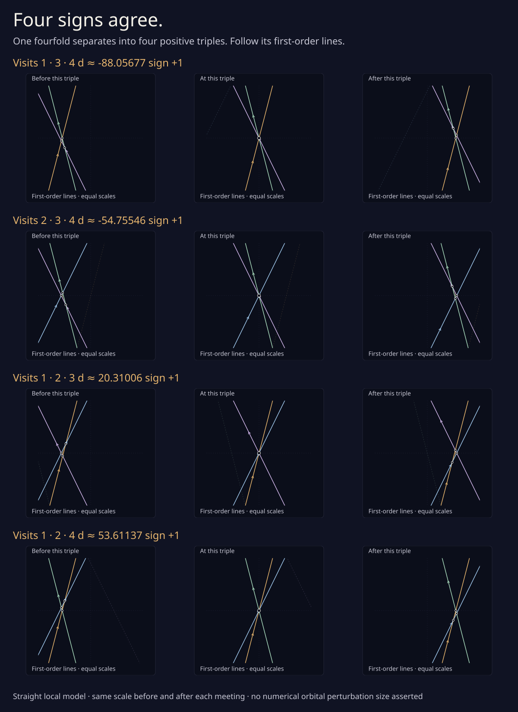

Four signs agree
Four visits of a drawing can meet at one point. Break the symmetry a little, and their four possible triples meet one at a time. At this fourfold, all four passages have positive sign. Each adds one to the drawing’s strangeness.
Follow the first-order local model of a certified meeting on rhythms 11 / 6, near outward distance 284.56257. Its straight lines describe the leading change after small normal shifts. The orbital branches have higher-order corrections.
Choose three of the four visits, in the order their meetings occur:
Left is before; zero is the triple; right is after. Each close-up keeps the same scale on both sides of its meeting.
Before visits 1, 3, and 4 meet. A small triangle closes as the slider approaches zero.
Passage sign
Triangle area model square units

Why are all four signs positive?
The visits run around their original tangent circle in order 1, 4, 3, 2 counterclockwise. Read in orbit order, any three therefore go clockwise. The passage sign is minus the orientation of that triangle of normals, so each sign is positive.
Among the six possible cyclic orders of four distinct normals, one gives four positives, one gives four negatives, and the other four give two of each. The earlier two-circle illustration shows the cancelling case. Follow the sign calculation ↗.

What do these straight lines describe?
Near each visit, shift its support distance by ε times 0, 1, 3, or 7. Measure the extra outward distance as εd and the displacement from the old meeting as εZ. The leading branch equation is Nᵢ · Z + d = aᵢ. The controls vary d; these model coordinates are rescaled.
Rational certificates prove four distinct positive orbital triples for sufficiently small positive ε, with first-order weights near −88.05677, −54.75546, 20.31006, and 53.61137. The viewer uses rounded normals and solves its straight-line model directly. It supplies no numerical allowed ε and does not simulate the orbital branches at a finite perturbation size. Read the proof and its scope ↗.
A few positive steps force a longer journey
Eight selected fourfolds and five ordinary reflected pairs force at least 18 positive passages on the 11 / 6 outward leg and 10 on 11 / 8. Their net strangeness changes are −102 and −112, so at least 120 and 122 negative passages must occur too.
Together with the sufficiently distant middle and the reversed second leg, the specified route needs at least 992 triples. Exact leg counts remain open, and no numerical common-offset threshold is supplied for the middle-event theorem. The signed-balance diagram follows those counts.